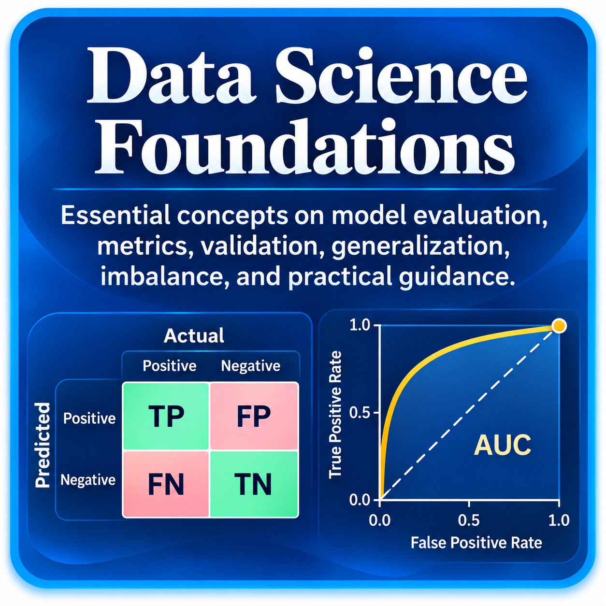
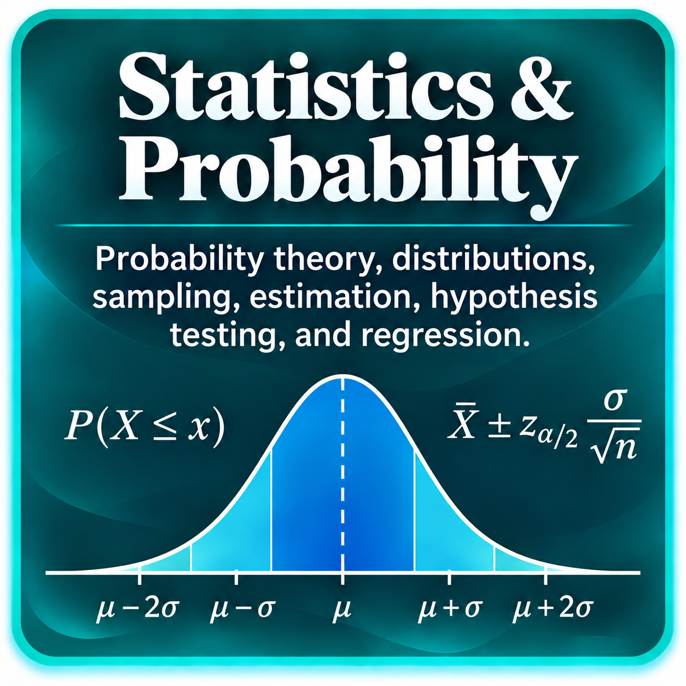
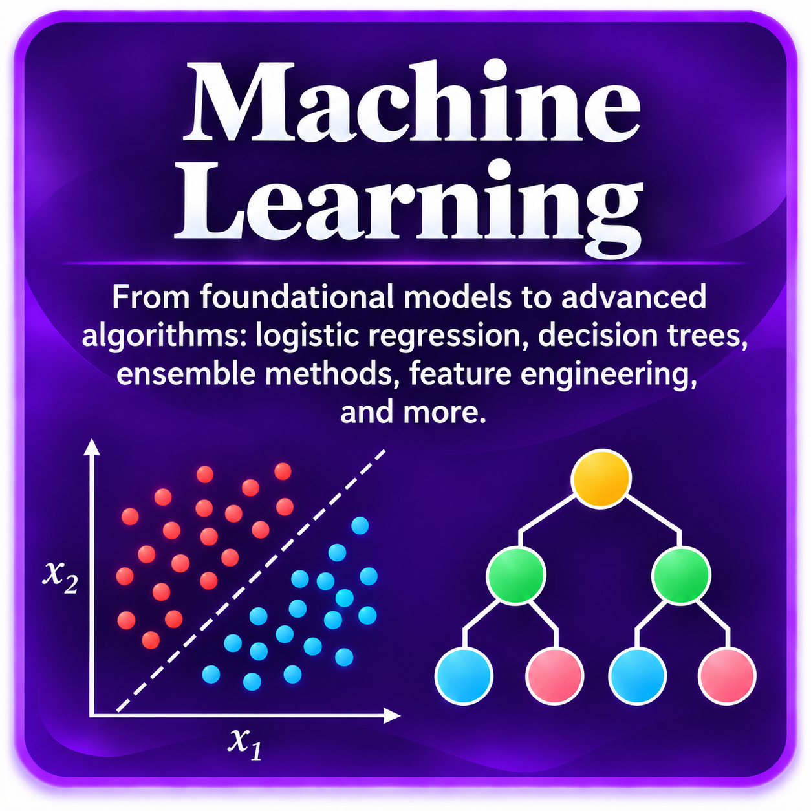

Fundamentos
Data Science Foundations
Predicciones, métricas, thresholds, class imbalance, validación, calibration, generalization y evaluación confiable de modelos.
Explorar ruta →Explicaciones visuales, guías paso a paso y rutas estructuradas para construir fundamentos sólidos en Data Science.

Predicciones, métricas, thresholds, class imbalance, validación, calibration, generalization y evaluación confiable de modelos.
Explorar ruta →
Probabilidad, distribuciones, muestreo, inferencia, confidence intervals, hypothesis testing, ANOVA, correlación y regresión.
Explorar ruta →
Desde los fundamentos y modelos lineales hasta trees, ensembles, feature engineering, tuning, explainability y deployment.
Explorar ruta →
Vectors, matrices, linear systems, projections, eigenvalues, PCA, SVD, calculus, gradients y optimization.
Explorar ruta →
Tensors, neural networks, backpropagation, optimization, CNNs, RNNs, Attention, Transformers y PyTorch.
Explorar ruta →
Python, NumPy, pandas, SQL, EDA, visualización, Jupyter, Git/GitHub y workflows reproducibles para Data Science.
Explorar ruta →El objetivo es avanzar desde la intuición hacia las matemáticas y luego hacia la implementación. Prefiero ejemplos completos, supuestos visibles y explicaciones que permitan reproducir el razonamiento.